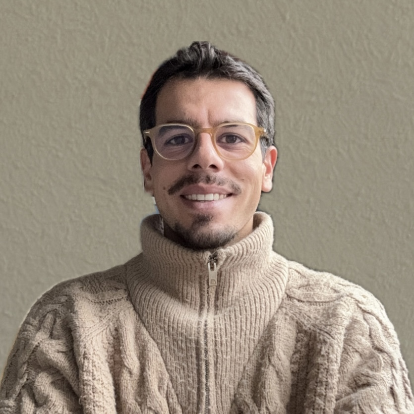

Conoscere il professionista è il primo passo per scegliere con serenità il proprio percorso.
Se sei arrivato fin qui, probabilmente stai attraversando un momento della tua vita in cui senti il bisogno di comprendere meglio ciò che stai vivendo, ritrovare equilibrio o affrontare una difficoltà che da solo fatica a trovare una soluzione.
Chiedere aiuto non significa essere deboli. Significa concedersi uno spazio in cui fermarsi, ascoltarsi e guardare con maggiore consapevolezza alla propria esperienza.
Il mio obiettivo è offrire uno spazio di ascolto professionale, accogliente e privo di giudizio, nel quale costruire insieme un percorso che rispetti la tua storia, i tuoi tempi e le tue risorse.

Sono Alessio Esposito, Psicologo Clinico, laureato con lode presso l'Università LUMSA di Roma e iscritto all'Albo degli Psicologi del Lazio (n. 27232).
Attualmente frequento il quarto e ultimo anno della Scuola di Specializzazione in Psicoterapia ASPIC, percorso che mi permette di approfondire costantemente competenze cliniche e strumenti terapeutici attraverso formazione, supervisione e pratica professionale.
Accanto all'attività privata collaboro con il SERD della ASL di Orbetello, esperienza che arricchisce quotidianamente il mio modo di lavorare e alimenta un costante confronto con situazioni cliniche complesse.
Ogni persona porta con sé una storia unica. Per questo motivo non esistono percorsi standardizzati né soluzioni valide per tutti.
Nel mio lavoro considero fondamentale costruire una relazione basata sulla fiducia, sull'ascolto e sul rispetto della persona. Credo che comprendere il significato della propria sofferenza rappresenti un passaggio essenziale per costruire un cambiamento autentico e duraturo.
Il percorso terapeutico nasce sempre dall'incontro tra la competenza professionale e l'esperienza di chi chiede aiuto: è un lavoro condiviso, costruito passo dopo passo.
Il primo incontro è uno spazio dedicato ad ascoltare la tua richiesta e comprendere insieme ciò che stai vivendo.
Non è necessario sapere già cosa dire o avere tutto chiaro. Potrai portare dubbi, domande o semplicemente raccontare ciò che senti importante condividere.
Al termine del colloquio valuteremo insieme quale percorso possa rispondere al meglio alle tue esigenze.